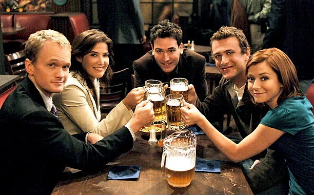

About Ted
kind, passionate, hopeful, and a little dorky. Ted isn’t as flirtatious as Barney or as beautifully commited as Marshall, but his charm lies in his quick wit and his deep dedication to the people he loves.
Ted and his friends
Why shouuld we love him.
- He believes in destiny.
- Always there for friends no matter what.
- Got left at the altar.
- Stole a Blue French Horn for Robin.
Ted's friends
His friends mean everything to him and they are all awesome.click on the links to read more about them.